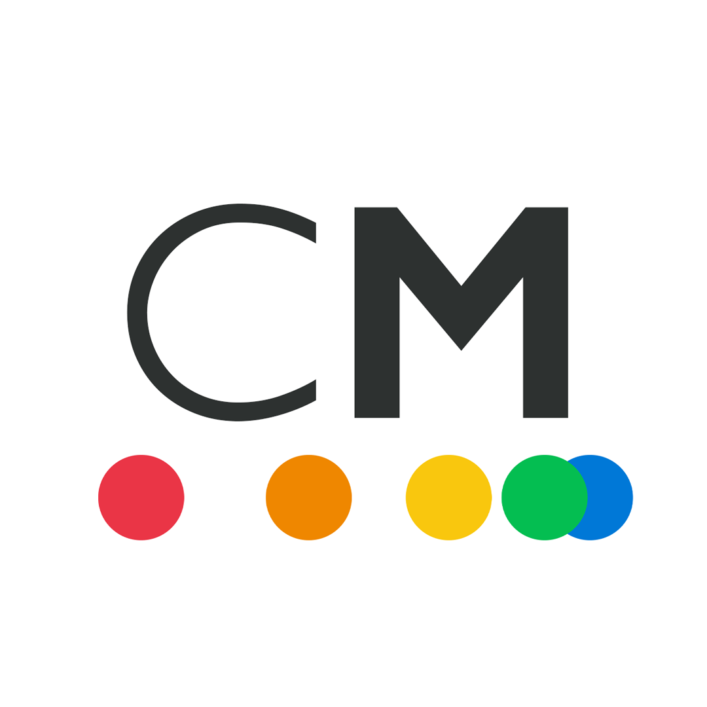

Extracurriculares

Admins do CCM
Os servidores web e a sala de computação do CCM são administrados por alunos do próprio curso.
Basançado: básico e avançado entrelaçados
O Basançado tem como intuito para os participantes dar conhecimento sobre os projetos de pesquisa dos estudantes do avançado, conhecer as disciplinas que eles estão cursando e ter uma conversa informal para obter conselhos, inspirações e contatos para o seu próprio projeto.
